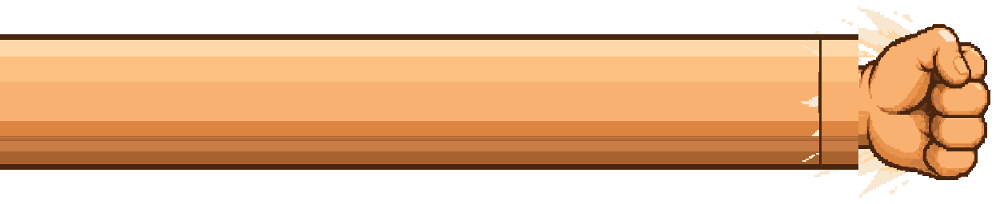
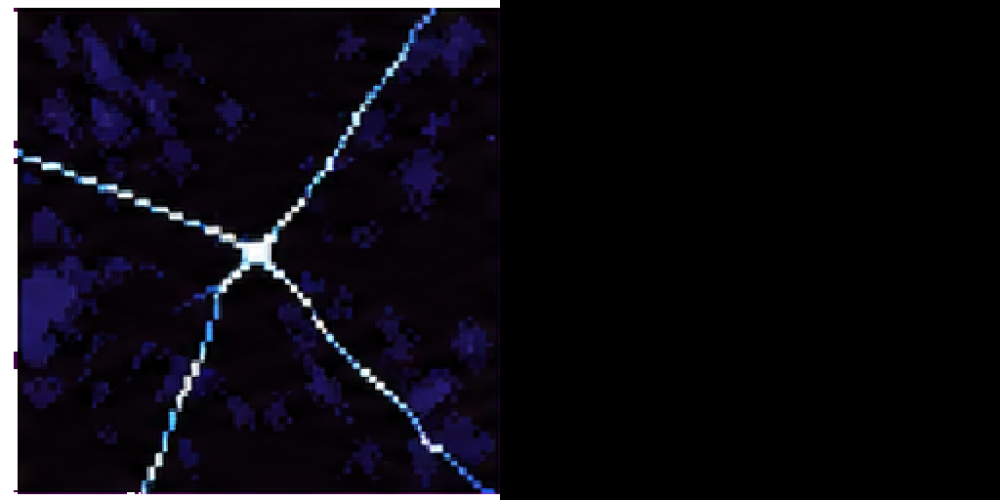
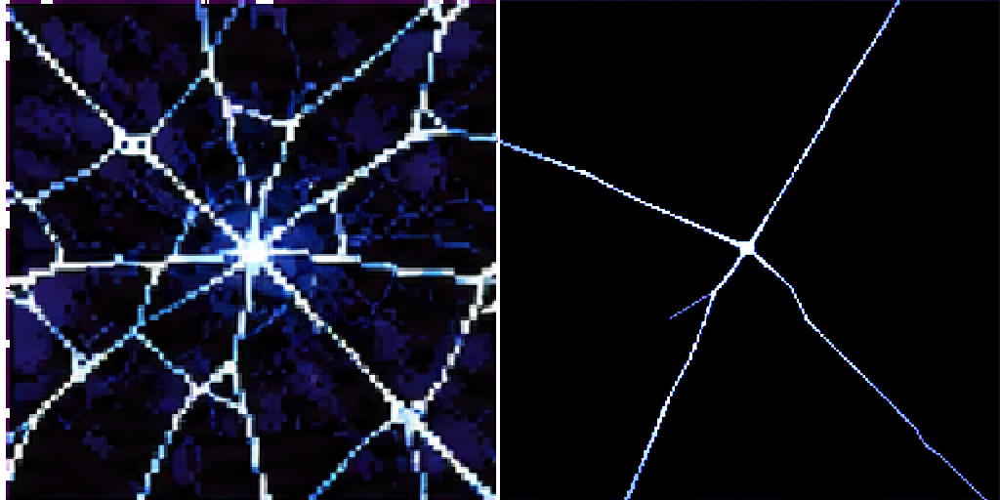
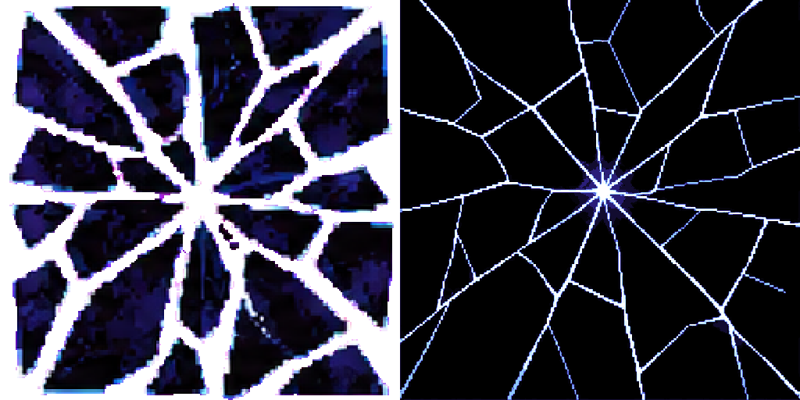
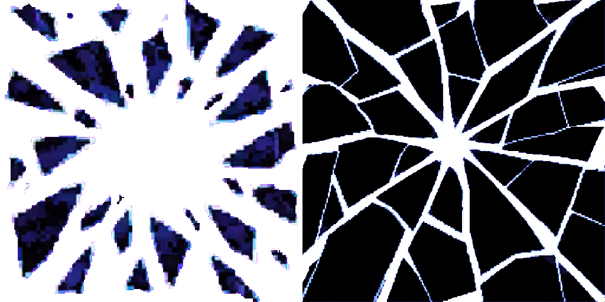
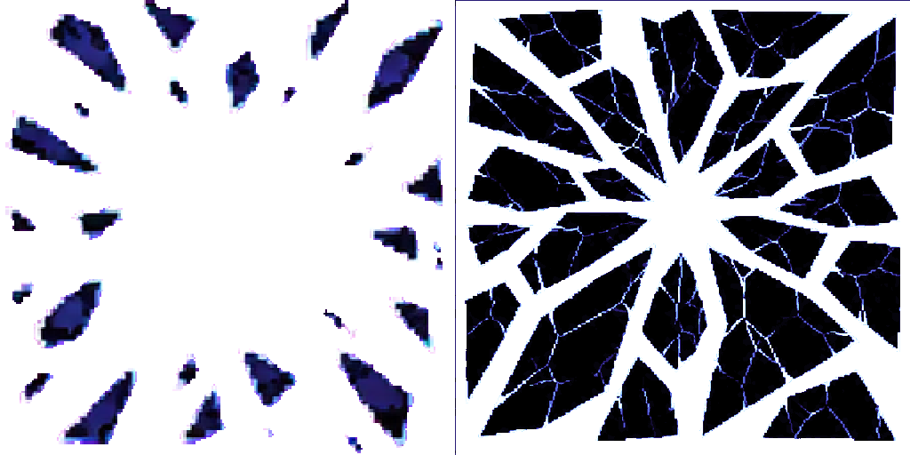
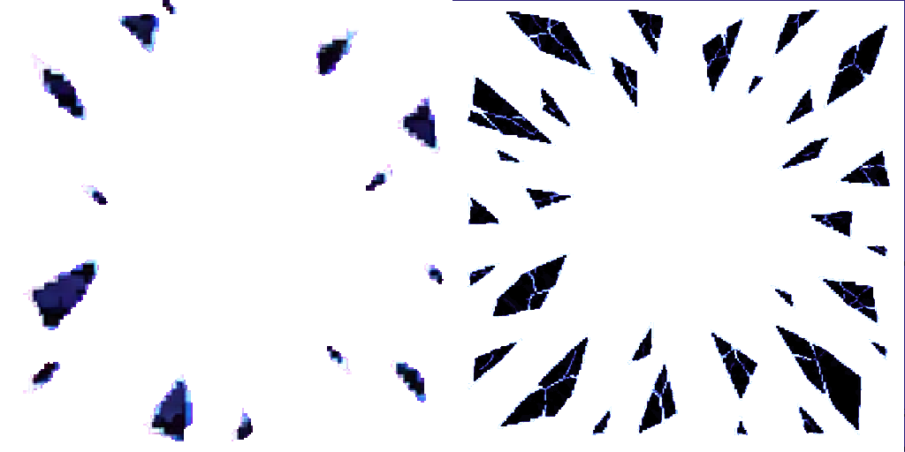
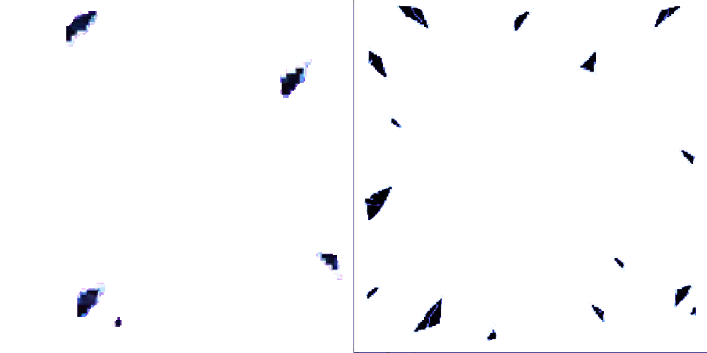
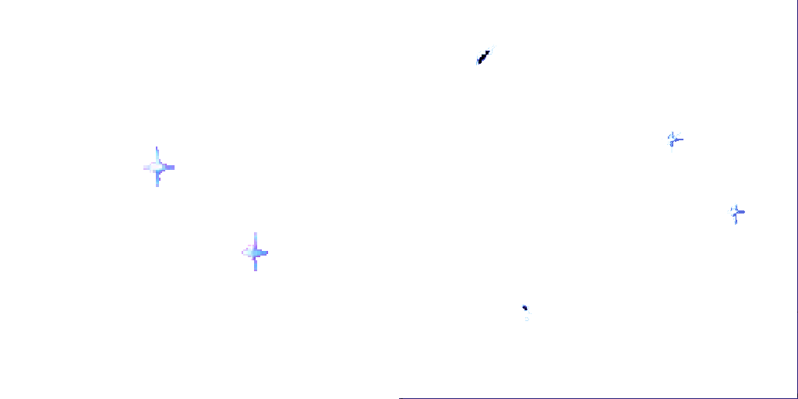

The user approved all six images as drawn via Claude relay spells #7: “Approve all six”. Relay spells #6 selected the current Codex model for generation this round only; that was a generation decision, not image approval. Runtime integration remains with Claude. The images below compare the approved candidate atlas with the previous production atlas.
HD VFX cells are 256×256 at 112 px per world unit. Art was keyed to exact magenta for raw sheets, reduced to hard palettes, then packed. Candidate pack: 114 effects / 729 frames / 9 HD pages; the 3 warnings are existing unrelated streamBolt, streamFlame, and gumArm notes.
Joined view repeats the packed 256px arm cell four times and places the packed fist so the wrist cut lands exactly on the arm edge. This shows the stretch at four fist lengths. v01 on the left comes from the approved production atlas; v02 on the right comes from the candidate atlas.
Source frames: gigantArm 0, gigantFist 0. Production atlas.

Source frames: gigantArm 0, gigantFist 0. Candidate atlas.
2 frames, 60 ms loop, tiled.
2 frames, 60 ms loop, 170px tube thickness, repeated row profile.
4 frames, 40 ms loop.
4 frames, 40 ms loop; 220px fist body, exact 170px wrist stub, 15-color palette.
Each row compares the approved single-cell v01 enlarged 2× with the candidate four-tile composition assembled from the actual packed TL/TR/BL/BR frames. Each comparison is 512×512 on both sides; frame number and 50 ms timing are preserved.








The six candidates are queued in the repository review records, and their generated call paths and hashes are preserved in the R2 production inventory. Visual approval remains separate from runtime integration and engine checks, which Claude owns after approval.